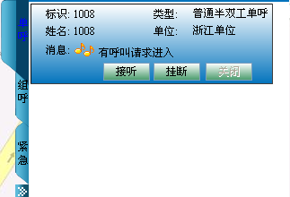

在本节，我们主要介绍以下几种半双工单呼的发起/接听方式：
2）单击呼叫工具栏的＜单呼＞图标，右侧会出现模式菜单栏，选择“对讲模式”，如下图1.1所示。
图1.1 呼叫工具栏发起半双工呼叫
3）用户按住PTT键接听，呼叫建立，并有优先语音发送权，地图上警员图标侧出现对讲模式呼叫下行图标 ，当无线用户释放PTT键，呼叫工具栏显示“（24004）：发射权已释放”。
，当无线用户释放PTT键，呼叫工具栏显示“（24004）：发射权已释放”。
图1.2 对讲模式呼叫建立
4）调度台按下＜PTT呼叫＞（或键盘空格键）获取授权，如图1.2所示。松开＜PTT呼叫＞释放授权。
图1.3 调度台获取授权
5）无线用户再按PTT键呼叫发送语音，呼叫工具栏显示“（24004）：获取授权”。
图1.4 用户获得授权
6）呼叫完成后，按下图标结束本次通话。
1）若调度台接收到用户“24004”发起的半双工呼叫请求，呼叫工具栏显示“（24004）：有呼叫请求进入”，调度台按住＜接听＞即可通话，地图上警员图标侧出现半双工模式呼叫上行图标，如图1.5所示。
图1.5 半双工呼叫请求进入
2）调度台按住＜PTT呼叫＞后不松开，可获取授权；语音发送完成后，松开＜PTT呼叫＞后，释放授权。
3）无线用户在调度台释放权限后，可以按住PTT键发送语音，松开PTT键释放授权，呼叫工具栏显示如图1.6所示。
图1.6 无线用户释放授权
4）半双工呼叫完成后，按下图标结束本次通话。
1）在系统操作菜单栏中单击［调度功能/呼叫面板］，弹出“呼叫面板”对话框。
2）单击“呼叫业务”模块中的“单呼”，弹出“单呼”对话框。输入无线终端标识号，系统自动获取终端标识对应的姓名、单位及编号。
3）选择“呼叫方式”为“对讲模式”，单击＜PTT＞按钮，如图2.1所示。
图2.1 对讲模式
4）如果收到正常的回铃音且对端用户摘机后，按下PTT键授权讲话，如图2.2所示。释放PTT键释放授权。
图2.2 用户获取授权
5）当无线用户释放授权时，调度员可按住＜PTT＞获取授权，发送语音信息，释放＜PTT＞则释放授权，如图2.3所示。
图2.3 调度台释放授权
6）调度员可单击＜挂断＞结束呼叫，此时，界面变回＜PTT＞按钮，如图2.4所示。
图2.4 结束半双工呼叫
1）若调度台接收到用户“1008（1008）”发起的半双工呼叫请求，“单呼”对话框显示如图2.5所示。
图2.5 呼叫请求进入
2）调度台按住＜PTT＞即可获取授权进行通话，如图2.6所示。释放＜PTT＞则释放发射权。
图2.6 调度台获取授权
3）当调度台释放发射权时，无线用户可按住PTT键发射语音信息，释放PTT键释放授权，如图2.7所示。
图2.7 用户释放发射权
4）通话结束时，调度台可单击＜挂断＞结束半双工通话。
1）若调度台接收到用户“1008（1008）”发起的半双工单呼请求，此时，在呼叫上行面板中显示如图3.1所示。

图3.1 有呼叫请求进入
2）单击＜接听＞接收用户的半双工单呼。按住＜PTT＞键，调度台即可获取授权，如图3.2所示。松开＜PTT＞键释放授权。单击＜挂断＞则拒绝接听。
图3.2 调度台获取授权
3）无线用户在调度台释放权限后，可以按住PTT键发送语音，松开PTT键则释放授权。
4）半双工单呼完成后，调度员按下＜挂断＞按钮或者用户挂断即可结束本次通话，如图3.3所示。
图3.3 结束半双工单呼
1）选中呼叫上行面板中的普通全双工单呼面板，单击＜呼叫＞按钮，此时＜呼叫＞按钮变为＜PTT＞，＜关闭＞按钮变灰，如图3.4所示。
图3.4 发起半双工单呼
2）用户按住PTT键接听，呼叫建立，并有优先语音发射权，如图3.5所示。当用户释放PTT键时，显示“1008:发射权已释放”。
图3.5 用户获取授权
3）调度台按下＜PTT＞按钮获取授权，松开＜PTT＞则释放授权。
4）调度员按下＜挂断＞按钮或者用户挂断即可结束本次通话，此时＜呼叫＞、＜关闭＞两个按钮可用，＜挂断＞按钮变灰。
 说明：
说明：
在呼叫上行面板中，调度员只能对已有半双工单呼上行记录的终端发起半双工单呼。
其他发起/接听半双工单呼方法的操作步骤与通过呼叫面板发起/接听半双工单呼的操作步骤类似。
Copyright © 2012 Eastcom, Inc. All rights reserved. |
||